Animais Silvestres
Animais silvestres são aqueles animais que não passaram pelo processo de domesticação, ou seja, são animais que ainda não estão acostumados com a convivência com seres humanos, bem como também não estão adaptados às condições de cativeiro. Esses animais podem ter comportamentos agressivos quando capturados e, ao serem colocados em cativeiro, podem não se desenvolver e reproduzir de maneira adequada. Isso significa que animais silvestres não conseguem viver com os seres humanos da mesma forma que os domesticados.
Onça Pintada
A onça-pintada (Pathera onca) é uma espécie de mamífero carnívoro que apresenta como característica marcante a presença de manchas em roseta em sua pelagem de cor amarelada, "é uma espécie de felino de corpo robusto e musculoso encontrada em praticamente todos os biomas brasileiros.
No Brasil, a onça-pintada é um animal que vive em diversos biomas: Amazônia, Pantanal, Mata Atlântica e Caatinga; Dentre todas, na Mata Atlântica e na Caatinga a espécie está ameaçada de extinção. Pesquisas apontam que o Pantanal possui cerca de 20 mil onças-pintadas, local de maior densidade desse animal no mundo.
Segundo o Ibama (Instituto Brasileiro do Meio Ambiente e dos Recursos Naturais Renováveis), no Brasil essa espécie é considerada “vulnerável”.
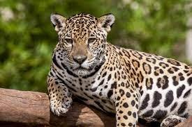 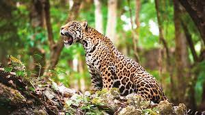 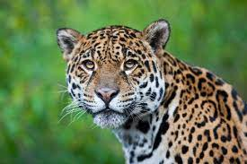 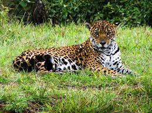Arara Azul
A arara azul é uma ave da família dos psitacídeos, assim como papagaios, periquitos, maritacas, entre outros.
É uma ave de exuberante plumagem azul, com uma faixa amarela ao redor dos olhos e outra próximo da mandíbula, bicos curvos e fortes e cauda longa; Voam em bandos e costumam se isolar no período reprodutivo. Durante à noite se reúnem para dormir, podem se agrupar às centenas nas árvores chamadas de dormitórios.
As araras azuis são aves fiéis que vivem juntas por toda vida.
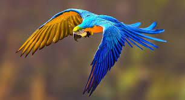 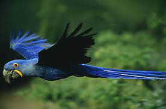 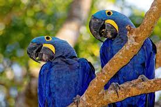 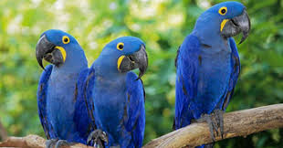Mico-Leão-Dourado
Mico-Leão-Dourado é um mamífero que vive exclusivamente na Mata Atlântica; É um símbolo da luta pela conservação da biodiversidade no mundo todo, os esforços pela espécie começaram nos anos 1970 quando sua situação era muito crítica.
Eles têm pelos com tons variados de dourado e cauda comprida. Possuem dedos muito compridos que facilitam a captura de pequenas presas em locais escondidos. Esses animais são onívoros, se alimentam de uma grande variedade de frutas, além de artrópodes e pequenos vertebrados.
Vive nas regiões de baixada costeira, ocorrendo até os 500 metros de altitude. Os micos-leões-dourados habitam tanto matas primárias (nativas) como matas secundárias (alteradas pela ação humana).
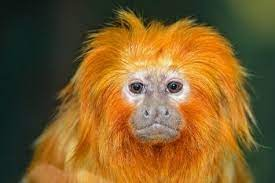 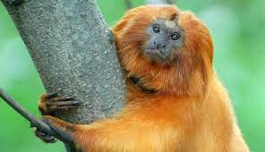 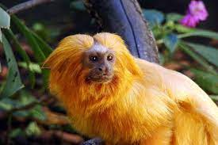 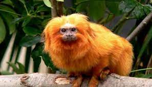Jabuti Piranga
O Jabuti Piranga ou Chelonoidis carbonarius cujo nome em Tupi-Guarani significa "o que come pouco vermelho", é um quelônio que possui escamas avermelhadas.
Ele esta na lista de espécies brasileiras em extinção e, por isso, é protegido pelo Ibama, que autoriza apenas a criação de dois tipos, o Jabuti-Piranga e o Jabuti-Tinga.Para ter um jabuti como pet doméstico, o tutor vai precisar de autorização do IBAMA, entidade que regula a criação de animais silvestres no país.
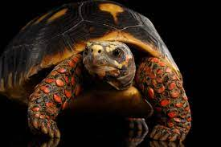 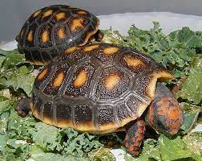 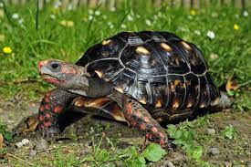 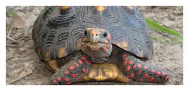Corujas
As corujas são aves que apresentam algumas características bem típicas, como olhos grandes voltados para a frente, bicos curvos e fortes, garras com unhas afiadas e encurvadas, e plumagem macia.
São aves, em sua maioria, de hábito noturno, predadoras e que conseguem se deslocar por meio de um voo silencioso, estão muito adaptadas à caça em ambientes onde a luminosidade é escassa. Apresentam uma visão muito acurada, e, apesar de enxergarem em locais com pouca luz, não são capazes de enxergar em situações de ausência total de iluminação. Esses animais não conseguem mover os olhos, porém são capazes de girar a cabeça em 270°, o que promove um aumento do seu campo de visão.
Ocorrem 22 espécies de corujas no território brasileiro, estando distribuídas em todos os biomas de nosso país. Algumas espécies são endêmicas, o que significa que ocorrem apenas em determinada região. Diante disso, é fundamental investimento em políticas de preservação ambiental e de conservação dessas espécies tão únicas da nossa fauna.
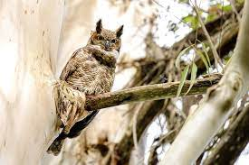 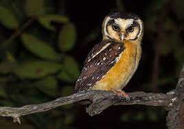 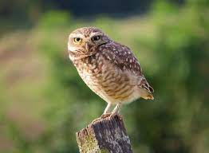 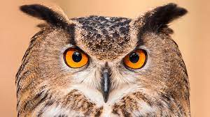